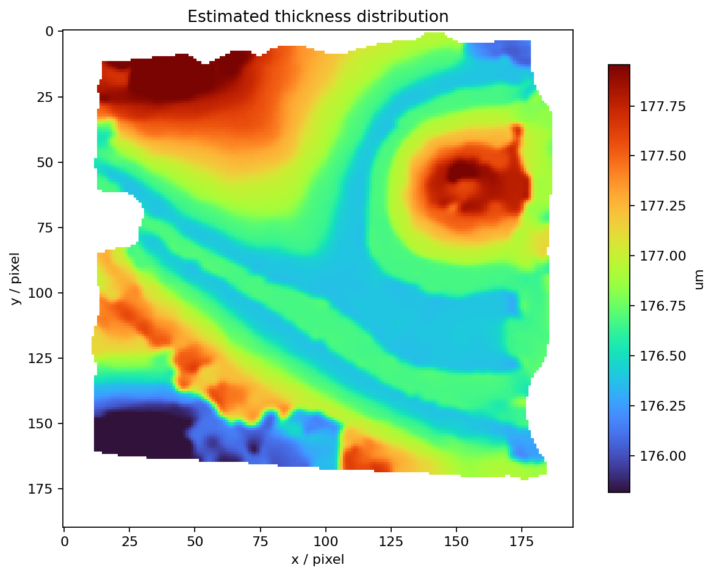
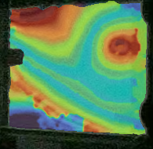
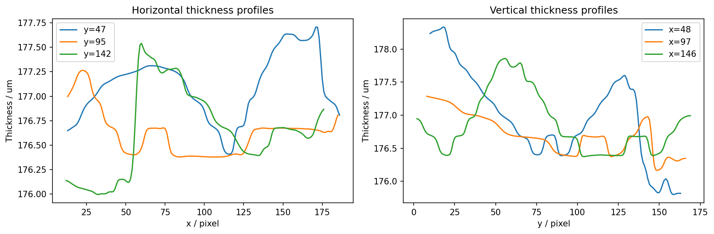
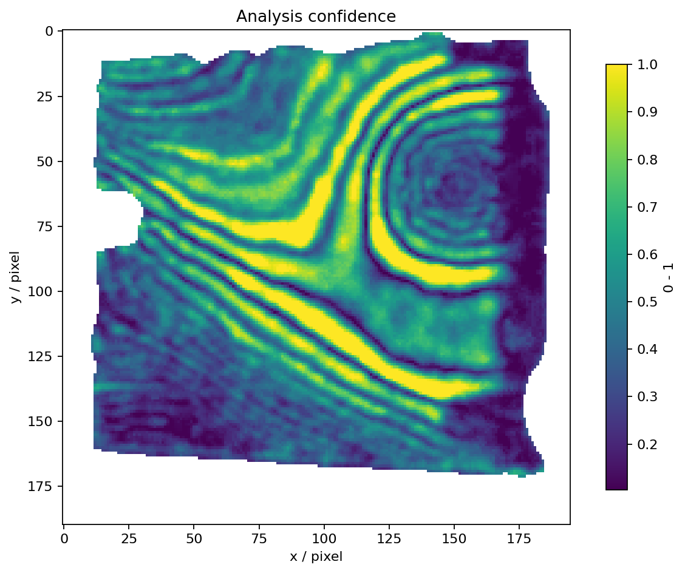

输入：227b062e3179bf0809ca7c88c1eced72.jpg；方法：单图彩色条纹级次插值；输出：近似绝对厚度。
| 指标 | 数值 |
|---|---|
| 稳健峰谷值 PV | 2.1373 μm |
| RMS 不均匀度 | 0.4380 μm |
| 中间 90% 厚度跨度 | 1.6511 μm |
| 中位置信度 | 0.452 |




条纹弯曲和间距变化表明厚度梯度随位置变化。默认单图模式是模型依赖的相对厚度估计；没有颜色—光程差标定和无膜基准时，不能将其作为可溯源的绝对厚度。